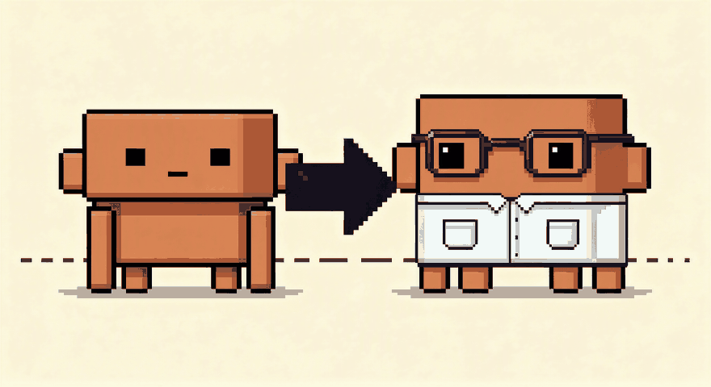
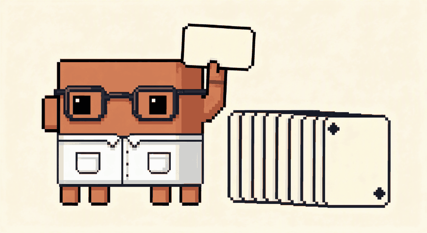
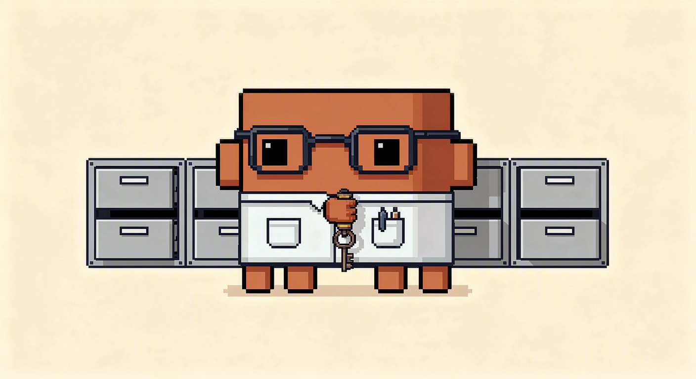
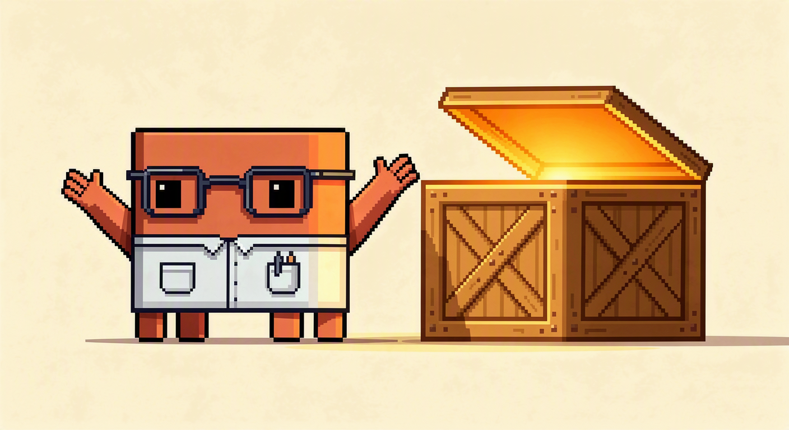
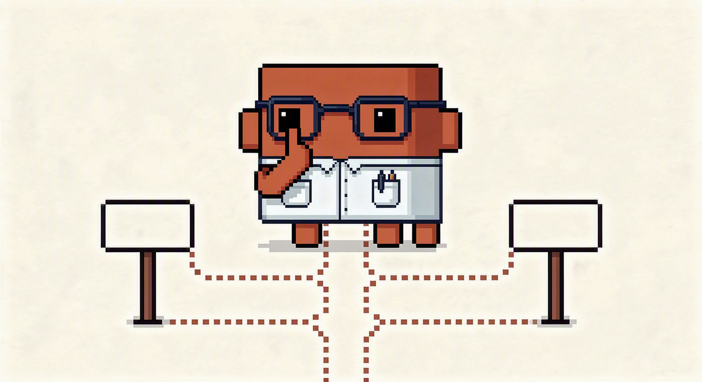
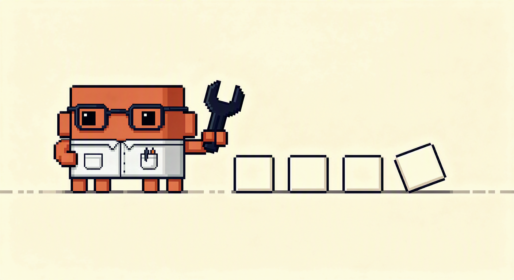
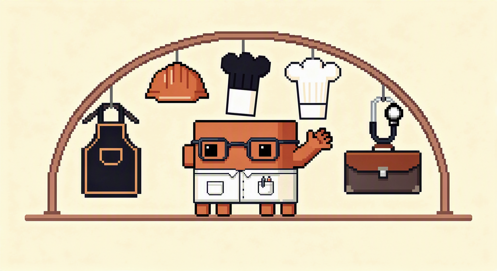
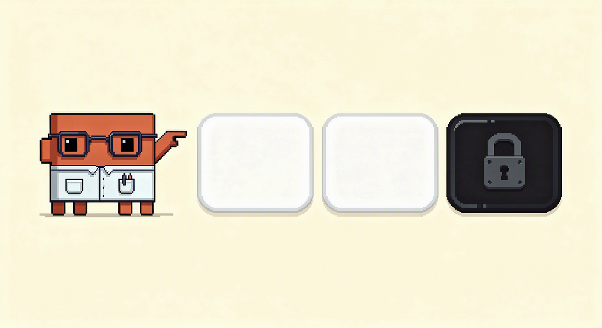
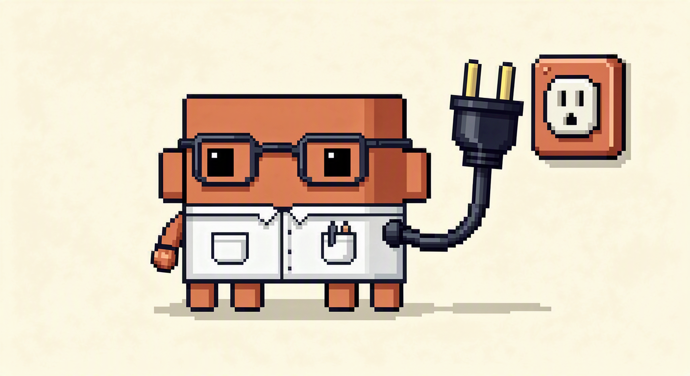
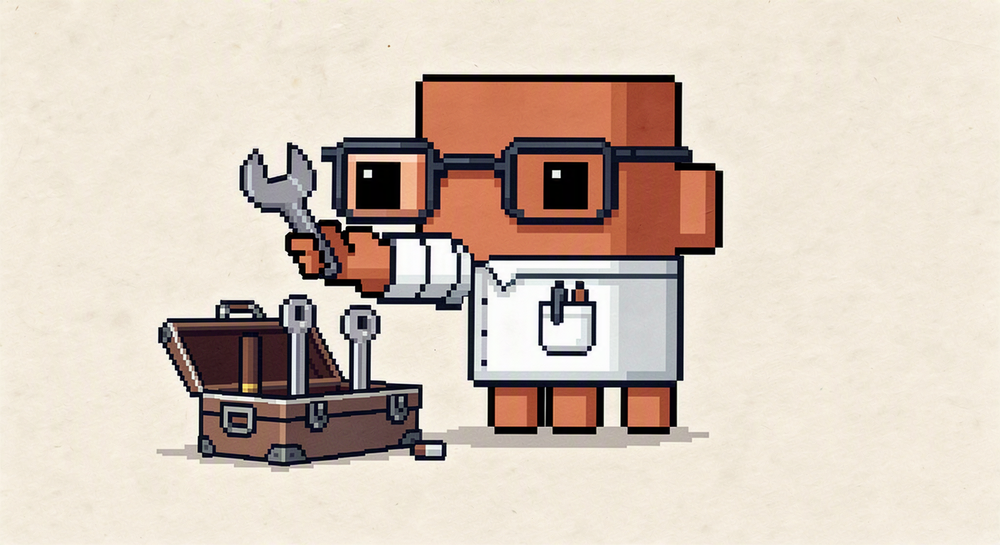

La bóveda
Todo lo que publico, ampliado y para siempre
Cada carrusel acaba aquí, ampliado y para siempre. Nada de correos ni de listas de espera: entras y te lo llevas.

Claude de cero, en una tarde
La guía de referencia: Proyectos, memoria, artefactos, Skills, MCP y Claude Code. Con la ruta exacta de cada ajuste.
Las 20 frases que lo cambian todo
Veinte líneas que pegas al final de cualquier prompt. Ninguna cambia lo que le pides: cambian cómo se lo pides.

20 prompts de Claude
Los cinco del carrusel más quince que no caben en Instagram. Con el porqué de cada uno, no solo el texto.

Lo que guarda cada IA de tus chats
Qué se queda ChatGPT, Gemini y Claude de lo que les cuentas, y los tres ajustes exactos para cortarlo.

Cómo saber si una IA es abierta
Gratis, pesos abiertos y código abierto son tres cosas distintas. Cómo distinguirlas en un minuto.
Por qué la IA se inventa cosas
No miente: rellena. Las tres frases que lo cortan, para copiar y pegar al final de cualquier prompt.

Cuando no sabes qué pedirle
Cuatro frases en orden para usar la IA como quien piensa en voz alta, no como quien encarga.

Los 6 errores y cómo se arreglan
Si Claude te responde mal, el problema casi nunca es Claude. Los seis fallos, con el arreglo exacto de cada uno.

Claude en tu oficio
Por dónde empezar según a qué te dedicas, con un primer paso que puedas dar hoy. Y lo que en cada oficio no hay que darle.

Las 4 IA de Google desde España
Tres funcionan y una no, y no es la que se suele contar. Con el enlace bueno de cada una y cómo comprobarlo cuando cambie.
La marca de Claude: qué demuestra y qué no
Todo lo que escribe va marcado, y esa marca no es simétrica: sirve para señalar a alguien y no sirve para defenderse.

Cómo instalar las skills de Claude
Dónde se encienden en la app —son dos ajustes, en dos sitios distintos— y cómo se instalan en Claude Code sin que te falte la mitad.

Skills para copiar
Las mías, abiertas: escribe-como-yo te saca la voz de tres textos tuyos. Te las llevas y las cambias a tu gusto.